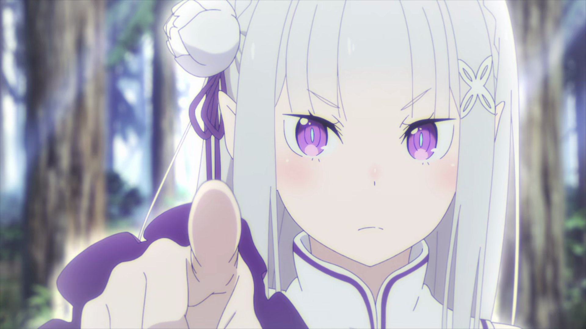
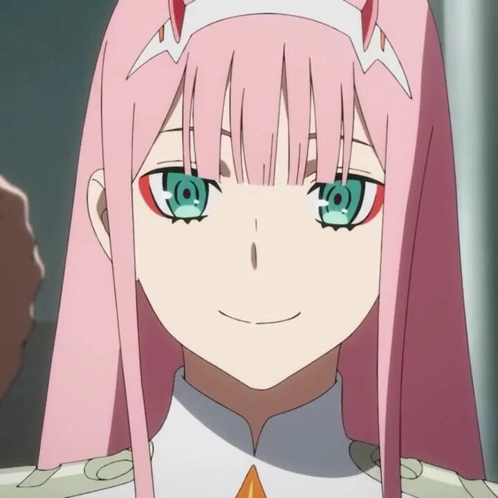
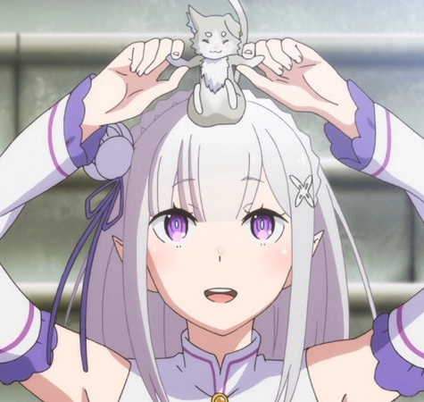
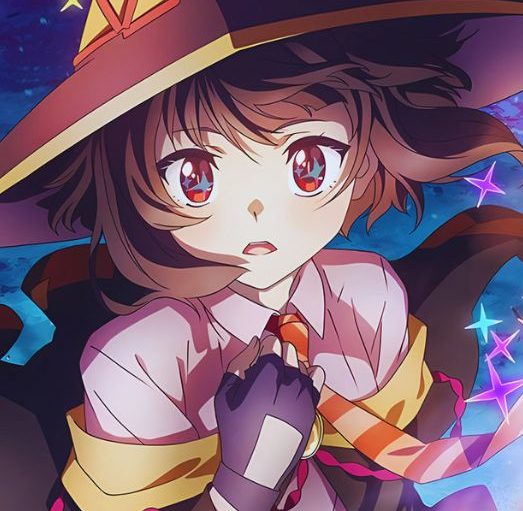
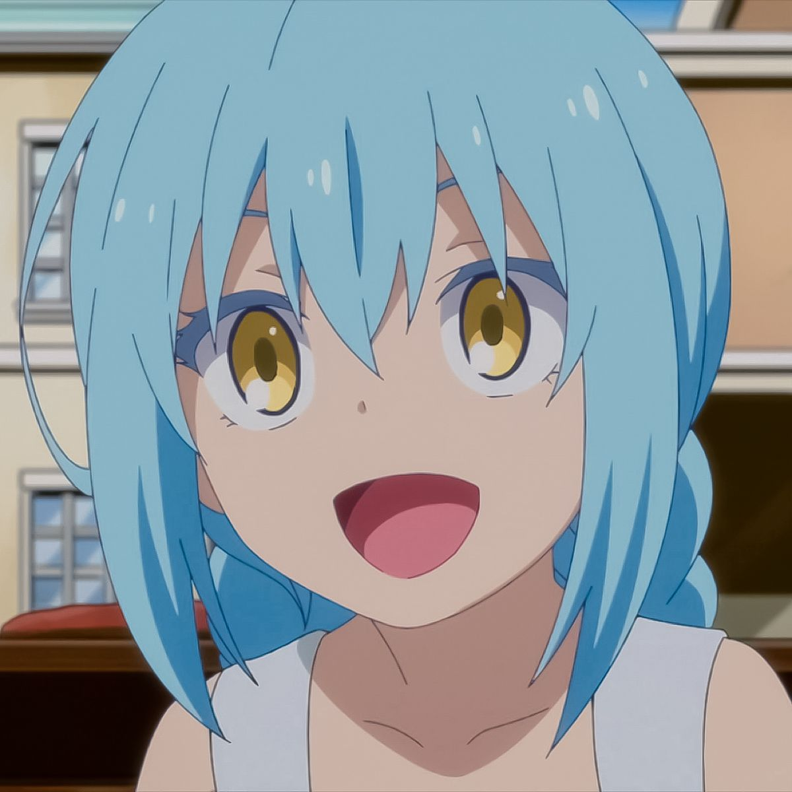

While they may be controversial, anime waifus can provide companionship and an escape from the real world. Whether
it's their design, their story, or their traits, you might find something in a character that reflects your
personality, making you feel a connection to that character.

My Waifus

ZeroTwo

Emilia

Megumin

Rimuru
"When everyone is searching for love in the real world, I find it among the pixels of anime."
- Me, Just Another Weeb
I'ts time!
Get started by clicking the enticing button right there!